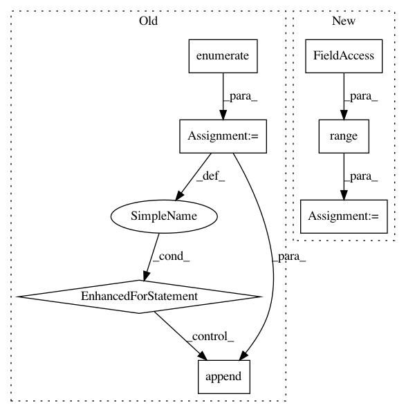

bf1337afb8d75f0bbd8725c14830b8798bceb33e,autokeras/net_transformer.py,,transform,#Any#,40
Before Change
def transform(model):
models = []
for index, layer in enumerate(model.layers):
if isinstance(layer, Dense):
models.append(to_deeper_dense_model(model, layer))
models.append(to_wider_dense_model(model, layer))
elif is_conv_layer(layer):
models.append(to_deeper_conv_model(model, layer))
models.append(to_wider_conv_model(model, layer))
models.append(to_skip_connection_model(model))
return models
After Change
def transform(model):
models = []
for i in range(constant.N_NEIGHBORS):
operation = randint(0, 2)
if operation == 0:
// wider
models.append(to_wider_model(model))
elif operation == 1:
// deeper
models.append(to_deeper_model(model))
elif operation == 2:
// skip
models.append(to_skip_connection_model(model))
return models
In pattern: SUPERPATTERN
Frequency: 3
Non-data size: 7
Instances
Project Name: keras-team/autokeras
Commit Name: bf1337afb8d75f0bbd8725c14830b8798bceb33e
Time: 2018-01-02
Author: jhfjhfj1@gmail.com
File Name: autokeras/net_transformer.py
Class Name:
Method Name: transform
Project Name: NifTK/NiftyNet
Commit Name: 5fb4404583ecffdee8cf98e4ae9e0a91d479f071
Time: 2018-08-07
Author: wenqi.li@ucl.ac.uk
File Name: niftynet/layer/loss_regression.py
Class Name: LossFunction
Method Name: layer_op
Project Name: NifTK/NiftyNet
Commit Name: 5fb4404583ecffdee8cf98e4ae9e0a91d479f071
Time: 2018-08-07
Author: wenqi.li@ucl.ac.uk
File Name: niftynet/layer/loss_segmentation.py
Class Name: LossFunction
Method Name: layer_op